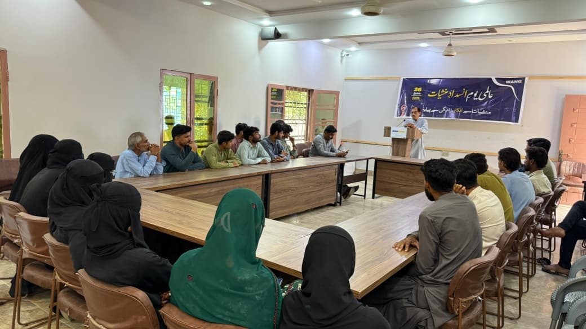

Welfare Association for New Generation (WANG) observed the International Day Against Drug Abuse and Illicit Trafficking on 26 June 2026 with a focused drug awareness seminar and a youth sports match in Lasbela, Balochistan.
The United Nations marks this day every year on 26 June. The purpose is simple, but heavy: to strengthen action and cooperation against drug abuse and illicit trafficking. For WANG, the issue is close to the ground. Drug use does not arrive as one large crisis. It arrives quietly, through peer pressure, unemployment, stress, unsafe company, misinformation, and a loss of hope.
That is why WANG kept the message practical this year. Talk to young people early. Give them safer spaces. Keep families involved. Use sport, education, and community leadership before harm becomes permanent.
What WANG did on 26 June 2026
The first activity was a seminar at WANG. Young men, young women, community members, elders, and WANG representatives sat together for a direct discussion on drug abuse and prevention. Speakers talked about how drug use affects health, family trust, education, income, mental wellbeing, and public safety.
The seminar did not treat drug prevention as only a police matter or only a health matter. It placed responsibility where it actually sits: with families, schools, youth leaders, peers, civil society, and local institutions working together.
Why sport was part of the campaign
The second activity was a sports match organized to carry the same message outside the seminar room. This mattered. A sports ground reaches young people differently. It turns an awareness message into a public moment, creates a positive peer group, and gives youth a visible role in the campaign.

For many young people, prevention does not begin with a lecture. It begins with belonging somewhere healthy. A team. A field. A coach. A friend circle where drugs are not normal. WANG used the match to say that anti-drug work is not only about warning young people. It is also about giving them better options.
WANG has carried this work since its inception
WANG was established in 1991 in Lasbela. Since then, its work has stayed close to young people and families: youth leadership, education, life skills, civic engagement, girls' education, sports for development, child protection, and community health awareness.
Drug awareness belongs inside that same history. WANG has documented earlier anti-drug campaigns, including community action against Gutka and a 2020 observance of World Drug Day with public dialogue and a children's speech competition. The 2026 observance continues that line of work. One seminar. One match. One clear message.
Say no to drugs before they take away health, education, family trust, and the confidence of the next generation.
Quick answers
What is International Day Against Drug Abuse and Illicit Trafficking?
It is a United Nations observance held every year on 26 June to strengthen awareness, action, and cooperation against drug abuse and illicit drug trafficking.
What was WANG's focus in 2026?
WANG focused on drug prevention through a community seminar and a youth sports match in Lasbela. The message was practical: educate early, involve families, and create healthy alternatives for young people.
Why does WANG connect drug prevention with youth development?
Because prevention is stronger when young people have confidence, trusted adults, safe peer groups, and meaningful activities. Sport, education, and leadership reduce the space where drugs can take hold.
Sources and related reading
Official UN observance: International Day Against Drug Abuse and Illicit Trafficking. UNODC/CND 2026 event framing: World drug problem: persisting issues, new challenges, innovative responses.